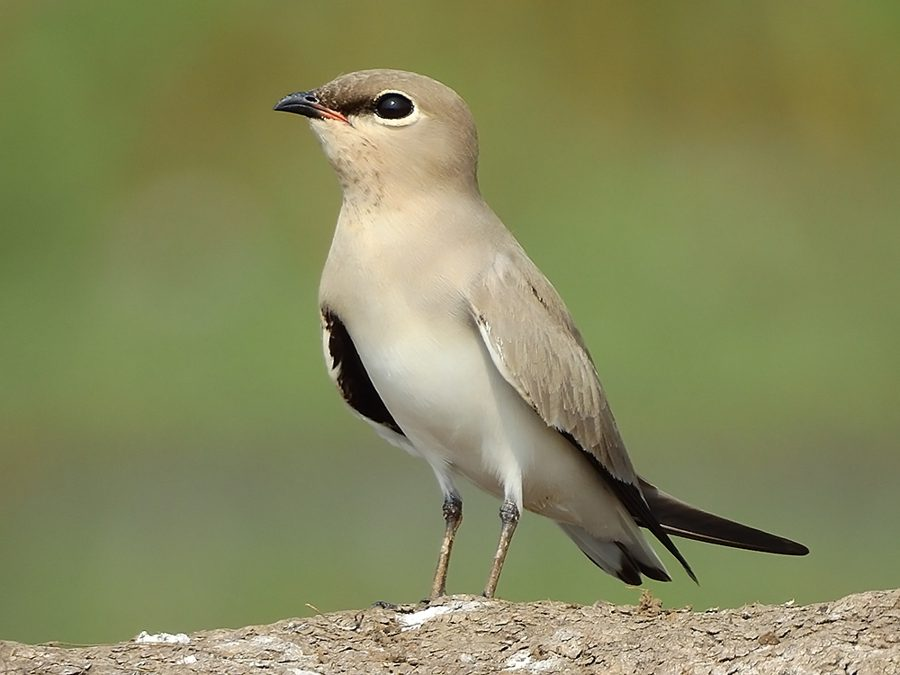

स्मॉल प्रैटिंकोलSmall Pratincole
Glareola lactea · Glareolidae · BRD-0159

- Scientific nameवैज्ञानिक नाम
- Glareola lactea (Forster, 1802)
- Familyकुल
- Glareolidae
- Hindiहिंदी
- स्मॉल प्रैटिंकोल
- Local namesस्थानीय नाम
- small pratincole, pratincole, pratinkol, little pratincole
- Status hereयहाँ की स्थिति
- native
- Movementआवागमन
- Resident, here all year
- IUCNIUCN
- LC
- Reviewसमीक्षा
- audited and independently read
When to look कब देखें
Present all year.साल भर मौजूद।
स्मॉल प्रैटिंकोल / Small Pratincole
Glareola lactea (Forster, 1802) — Glareolidae
स्मॉल प्रैटिंकोल — यह छोटी, फुर्तील चिड़िया नदी की बालू पर रहती है और हवा में उड़ते हुए कीड़े पकड़ती है। इसके पंख लंबे होते हैं, और यह बहुत तेजी से उड़ता है। रंग भूरा-धूसर होता है, और पेट सफेद होता है। यह शाम को बहुत सक्रिय रहता है। घाघरा नदी पर इसे देख सकते हैं।
Quick Identification त्वरित पहचान
| Feature | Description |
|---|---|
| Size | Small pratincole, 17–18 cm; compact body |
| Plumage | Grey-brown above; white throat and belly |
| Head | Small, dark lore stripe; white supercilium faint |
| Wings | Long, pointed; suited for aerial feeding |
| Tail | Short, slightly forked; may have pale terminal spots |
| Legs | Short; dark coloured |
| Flight | Highly agile; tern-like flight; rapid wing beats |
| Behaviour | Aerial insectivore; often in small flocks on sandbars |
Field tip: Look for a small, grey-brown bird with white belly and long pointed wings, either perched on river sandbars or flying erratically above the water catching insects. The tern-like flight and aerial feeding habit distinguish it from plovers. Often seen in small flocks resting on open sand. Most active in late afternoon and evening.
हिंदी — कैसे पहचानें:
छोटी, नीली-भूरी चिड़िया।
सफेद पेट।
लंबे पंख, तेज़ी से उड़ता है।
हवा में कीड़े पकड़ता है।
Morphology आकारिकी
Biometrics:
| Measurement | Range |
|---|---|
| Total length | 170–180 mm |
| Wing (flattened chord) | 130–145 mm |
| Tail | 50–60 mm |
| Bill | 12–15 mm |
| Tarsus | 12–15 mm |
| Weight | 35–50 g |
Plumage: Crown and upper back grey-brown. Lore dark. Supercilium faint or absent. Cheeks grey-brown. Throat white. Wing coverts grey-brown. Flight feathers darker. Rump slightly paler. Tail short, grey-brown with faint forking and pale spots at tips. Underparts white from chin to undertail coverts. Flanks may show buff wash.
Head: Small, rounded. Eyes dark. Lore dark grey. Facial pattern subtle.
Bill: Short, fine, straight, dark-coloured.
Legs: Short, dark grey or black; suited for perching on ground rather than running.
Wings: Long, pointed; wing formula important for species identification. Suited for agile, rapid flight.
Sexes: Similar; slight size differences, males marginally smaller.
Juveniles: Slightly duller than adults; white throat less pronounced initially.
Vocalisations
Largely silent except when feeding or roosting:
- Contact call: Soft chirping notes between flock members.
- Feeding call: Excited, rapid chirping when feeding in flocks on insects.
- Alarm: Sharp chirp if disturbed.
हिंदी: ज़्यादातर शांत। झुंड में चहचहाता है।
Behaviour & Ecology व्यवहार और पारिस्थितिकी
Aerial insectivore: Feeds exclusively on insects caught on the wing:
- Small flies and gnats
- Mosquitoes
- Small moths and flying insects
- Occasionally insects on the ground
Feeding technique: Hunts by flying erratically over river and sandbars, snatching insects from the air with a quick snap of the bill. Tern-like feeding flight with rapid wing beats and quick turns.
Social behaviour: Often solitary or in pairs on perches; feeds in small flocks when insects are abundant.
Roosting behaviour: Roosts on open sand and gravel of sandbars; often in small groups. May roost communally with other pratincoles or terns.
Habitat specialist: Strictly dependent on river habitats with suitable sandbars for roosting and adjacent open water or air space for foraging.
Resident: Largely resident year-round in eastern UP on suitable river systems; some local movements with water levels.
Sedentary: Minimal migration; returns to the same river systems year-round.
हिंदी: हवा में कीड़े पकड़ता है। नदी की बालू पर बैठता है।
Life Cycle / Phenology जीवन चक्र
Resident: Present year-round on suitable river systems in eastern UP.
Breeding: February to June; peak March–May. Less obvious breeding behaviour than larger pratincoles.
Nesting: Ground nest — a simple scrape in sand or gravel on sandbar with minimal lining. Eggs are cryptically coloured.
Eggs: Typically 2 (occasionally 3) buff or olive eggs with dark markings; incubation approximately 17–18 days by both parents.
Chicks: Precocial; cryptically coloured. Leave nest within hours. Parents guard chicks.
Fledging: Chicks become independent at approximately 17–20 days (relatively quick for a charadriiform).
Roosting: On open sand; often communal in small groups.
Water dependency: Breeding tied to sandbar availability; flooding may inundate nests.
हिंदी: नदी की बालू पर अंडे देता है। कम समय में बड़ा हो जाता है।
Host Plants or Prey आहार
| Food Type | Examples |
|---|---|
| Flying insects | Small flies, gnats, mosquitoes |
| Small moths | Various microlepidoptera |
| Flying insects | Airborne insects of various types |
| Ground insects | Occasionally insects on ground |
हिंदी: सिर्फ हवा में उड़ते कीड़े खाता है। मच्छरों को भी खाता है।
Predators / Natural Enemies शत्रु
- Snakes: River snakes; rare given small bird size
- Monitor lizards: May predate eggs
- Crows and corvids: Depredate eggs and young chicks
- Raptors: Large raptors rarely target such small birds
- Habitat loss: Loss of suitable sandbars
हिंदी: कौवों का मुख्य खतरा। बाढ़ से घोंसलों को नुकसान।
Agricultural / Human Relevance कृषि प्रासंगिकता
Protected species: Listed in Schedule IV of the Wildlife (Protection) Act 1972, amended 2022. All wild birds are protected.
Mosquito control: By consuming mosquitoes and other small flying insects, the Small Pratincole provides a minor ecosystem service in mosquito and insect population control near rivers and wetlands.
Ecosystem role: As a specialist aerial insectivore, it plays a niche role in floodplain ecosystems and food webs.
Habitat conservation: The species is dependent on undisturbed river sandbars and may be an indicator of healthy river systems with appropriate sandbar formation and minimal human disturbance.
हिंदी: विधि अधिनियम 1972 के तहत संरक्षित है।
Expected Locally स्थानीय रूप से अपेक्षित
Not a field record. Written from published accounts for eastern Uttar Pradesh. No confirmed local sighting yet — if you have seen it, that is what the atlas needs.
अभी तक स्थानीय पुष्टि नहीं। यह विवरण प्रकाशित स्रोतों से है, किसी अवलोकन से नहीं।
The Small Pratincole is expected as a resident on the sandbars of the Ghaghra, Rapti, and other river systems in Basti and Ayodhya districts. The species should be looked for on open sandbars, particularly during low-water periods (February–May and October–November) when sandbars are exposed. Look for small grey-brown birds with white bellies either perched on sand or flying erratically above the water. The tern-like flight and aerial feeding habit are distinctive. A first record would be a clear photograph showing the grey-brown plumage, white belly, and long pointed wings, or an observation of the bird catching insects in flight, with date and location.
हिंदी: नदी की बालू पर देख सकते हैं। हवा में कीड़े पकड़ता हुआ।
Distribution वितरण
Global range: Indian subcontinent and parts of Southeast Asia, primarily on major river systems.
In India: Distributed on suitable river systems throughout mainland India.
In Uttar Pradesh: Present on major rivers including the Ganges, Gomti, Ghaghra, and Rapti.
In Basti district / eastern UP: Expected on the Ghaghra, Rapti, and Saryu river systems throughout the year.
Research Questions शोध प्रश्न
- What is the population density of Small Pratincole on the Ghaghra-Rapti river system in Basti district?
- How do roosting sites vary seasonally in response to water levels and sandbar formation?
- क्या यह चिड़िया साल भर यहाँ रहता है, या कहीं और चली जाता है? Are populations truly sedentary?
- What is the breeding productivity and fledging success rate?
- How much does insect availability (prey abundance) affect roosting flock size and distribution?
- What is the minimum size of sandbar required to sustain a roosting flock?
Similar Species मिलती-जुलती प्रजातियाँ
| Species | How to distinguish | हिंदी | Field Rule |
|---|---|---|---|
| Large Pratincole (Glareola maldivarum) — vagrant | Larger (25 cm); darker plumage; deep forked tail | बड़ा प्रैटिंकोल | Large Pratincole is much larger with darker plumage and more deeply forked tail. |
| Common Tern (Sterna hirundo) — if seasonal | Similar size but different structure; white and black cap; hovers to fish | कॉमन टर्न | Common Tern is larger, white-bodied with black cap, hovers to fish. Small Pratincole is grey-brown with white belly, catches insects. |
Field rule: Small grey-brown bird with white belly, long pointed wings, flying erratically over river catching insects = Small Pratincole. More compact and grey than terns, less colourful than larger pratincoles.
Taxonomy & Classification वर्गीकरण
Original description. Described by Johann Reinhold Forster in 1802. Type locality: India.
Subspecies. Monotypic — Glareola lactea lactea. No subspecies are recognised.
Family and order placement. Order Charadriiformes; family Glareolidae (pratincoles and coursers). The genus Glareola contains several pratincole species; G. lactea is the Asian species.
Phylogenetic notes. Molecular studies place Glareola lactea within the Asian pratincole clade, distinct from African and other regional pratincoles.
IUCN status rationale. Assessed as Least Concern (LC) on the IUCN Red List. The species has a wide range and is adaptable to various river systems and wetland habitats, though it remains dependent on sandbars and open water for foraging.
हिंदी: भारत की मूल निवासी चिड़िया है।
Photo Gallery फोटो गैलरी
No photos yet — add field photos to media/species/small_pratincole/ and run node scripts/sync_photos.js.
Wanted photos:
- Perched on sandbar
- In flight catching insects
- Flock on sand
- Close-up of head and bill
- Over water with tern-like flight pattern
References संदर्भ
- Forster, J.R. (1802). Zoologia Indica. [Original description]
- Ali, S. & Ripley, S.D. (1968). Handbook of the Birds of India and Pakistan. Vol. 2. Oxford University Press, Delhi.
- Grimmett, R., Inskipp, C. & Inskipp, T. (2011). Birds of the Indian Subcontinent. 2nd ed. Christopher Helm, London.
- BirdLife International (2024). Glareola lactea. IUCN Red List of Threatened Species. Ver. 2024.
- Rasmussen, P.C. & Anderton, J.C. (2005). Birds of South Asia: The Ripley Guide. Smithsonian Institution, Washington DC.
- GBIF Occurrence Data — Glareola lactea, Uttar Pradesh (2010–2025).
Source file: species/fauna/birds/small_pratincole.md